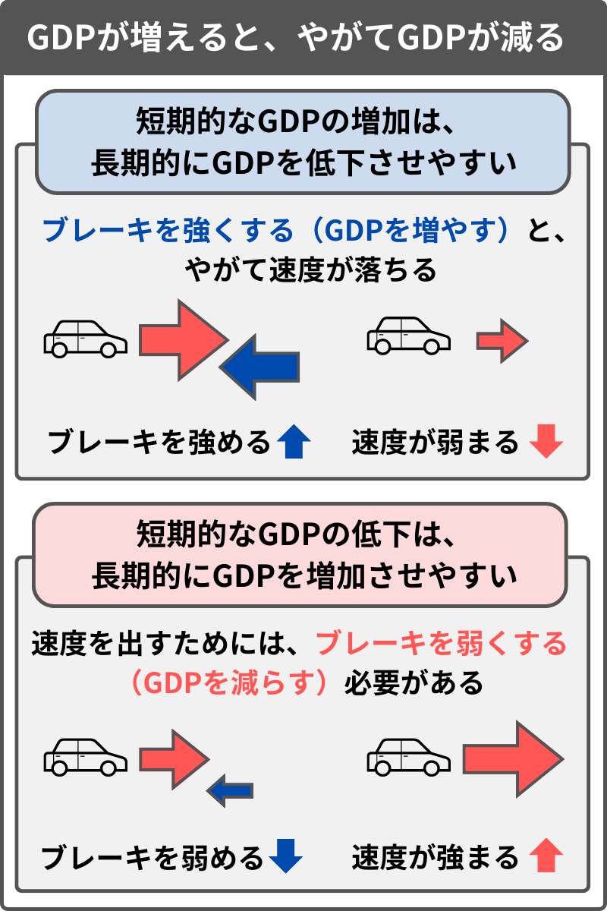

この第1章は、「なぜ社会に必要な仕事ほど給料が低い傾向にあるのか？」、「なぜテクノロジーが進歩して、効率化・省力化・自動化などが進んでいるはずなのに、それほど生活が楽になっていかないのか？」、「なぜ少子化という社会の存続にとって最も重要な問題の対策が進まないのか？」、などといった問いへの回答を試みる形になる。
この手の問いは、日々の労働に不満を感じている人や社会を善くしていきたいと考える人にとって非常に重要なものであるはずなのに、それほど真剣に論 じられているようには思えない。その理由は、まさにそういった問いを抱くような人間を不利にするように、今の社会のルールが機能しているからだ。
これらのテーマは、「ベーシックインカム」を説明するための前提として必要なものであり、本章ではまずそのような問題について論じていく。
目次
- 1.1 社会が進歩しているはずなのに生活が苦しくなる矛盾
- 1.2 「集団の欲望」と「個人の欲望」の相反関係に着目する
- 1.3 スポーツは「倒錯」によって「平和」をもたらす
- 1.4 市場が社会に普及するほど「相対的な競争」が重視される
- 1.5 「豊かになるが、正しくない」か、「正しいが、豊かにならない」か
- 1.6 戦争とスポーツの違い
- 1.7 「集団性（豊かさ）」と「個人性（正しさ）」が相反する
- 1.8 「GDP」という指標の問題
- 1.9 「非ルール」と「ルール」
- 1.10 なぜ働くのがつらいのか？
- 1.11 「正しさ」という「ブレーキ」によって、より大きな「豊かさ」が成り立つ
- 1.12 経済成長ではなく「ベーシックインカム」が必要
- 第1章のまとめ
1.1 社会が進歩しているはずなのに生活が苦しくなる矛盾
過去と比べて、世の中の多くのものが進歩している。基本的に、発見された知識や発明された技術は蓄積していくし、普通に考えれば、今よりも将来のほうが暮らしは楽になっていくはずだ。
しかし今も、生活に苦しみ、将来に不安を抱えている人は多くいるし、少子化が進んで社会の存続が危うくなっている。なぜそうなるのか？
一言で答えるなら、「相対的な優劣を競っても、物質的な豊かさは向上せず、むしろ全員の負担が増えていくから」だ。つまり本論では、現代人が苦しんでいる理由を、「相対的な競争」の過剰に見ている。
一般的に、市場競争によって社会が豊かになっていくイメージが強い。だが実際のところ、市場は、「相対的な優劣を競う競争」に人々を駆り立てるものであり、生活を楽にするようには機能しにくいのではないか、という点についてまずは論じたい。
市場のメカニズムを説明するときに「需要と供給」が持ち出されることがよくあり、それもあってか「市場は需要を満たそうとする」と思われがちだが、 必ずしもそうではない。例えば、育児や介護といった分野は、いくら需要があっても「市場のルール」において高く評価されることはない。なぜなら、乳幼児や 高齢者は貨幣を稼ぐことができないからだ。
冷静に考えれば、市場は、「どんな人の需要でも満たそうとする」ものではなく、「貨幣を稼げる人の需要を満たそうとする」ルールだ。いくら金を持っていない人の需要を満たしても、その人は金を払えないので儲かることはない。そして、貨幣を稼ぐことのできない人が必要とするものは、家族、地域、国家などの市場ではない領域に頼らざるをえない。
誰しもが「貨幣を稼げる個人」になる以前には、出生や育児といった「貨幣に換算できない（市場に評価されない）」ものに頼っている。そ のため、「市場のルール」だけでは、市場活動の前提になる主体は存在することができない。もっともこのような見方は、「経済は社会に埋め込まれている（経 済活動の前提になるものが、非市場的なものによって成り立っている）」と表現したカール・ポランニーなどの論者によって指摘されてきたものでもある。
ここで俎上に載せたいのは、「貨幣を稼げる個人の需要」を評価する「市場のルール」が、「金を稼げない人も含めた社会全体の豊かさ」にとってマイナスに働くのではないか、という論点だ。
それを説明するために、ここではまず、「絶対的な生産」と「相対的な競争」という言葉を使う。
- 絶対的な生産：全員にとっての豊かさの絶対量を増やそうとすること
- 相対的な競争：個人が優劣を競い合って分配の正当性を決めること
全体のパイを増やそうとするのが「絶対的な生産」であり、生産されたパイの分配を決めるのが「相対的な競争」になる。両者は重なり合う部分もあるかもしれないが、ここでは意図的に、「絶対的な生産」と「相対的な競争」が相反する、という見方を提示する。
そして、テクノロジーが進歩して効率化や自動化が進み、今も多くの人が努力して働いているはずなのに生活が楽にならない理由を、「絶対的な生産」に対して、「相対的な競争」が行われすぎていることに見る。
1.2 「集団の欲望」と「個人の欲望」の相反関係に着目する
社会には、「みんなのためは自分のため」あるいは「自分のためはみんなのため」という規範があるかもしれない。しかし、個人に与えられている時間や労力などのリソースが有限な以上、「自分のため」と「みんなのため」が原理的にトレードオフになることは否定できない。
例えば、ある人が、出生やケアワークやインフラ整備などの仕事に自身のリソースの大半を費やした場合、それは素朴にその社会の豊かさに寄与したこと になる。一方でその人は、それを行ったために、市場競争や学力テストやスポーツなど、相対的な優位を競う競争に費やすリソースを失うことになってしまいや すい。つまり、「他人のためになる仕事をするほど、自己実現の機会を損失する」という構造がある。
基本的に人は、自分が所属する社会に対しては、「絶対的な生産」が多く行われる社会であってほしいと考える。一方で、個人（自分自身）としては、自身のリソースを「相対的な競争」に勝つために使ったほうが有利になりやすい。
このような関係を、「集団の欲望」と「個人の欲望」という言葉を使って説明を試みる。
ここでは、所属集団に「絶対的な生産」をしてほしいと考える「集団の欲望」と、自分が「相対的な競争」で勝ちたいと思う「個人の欲望」が、トレードオフの関係にあると考える。
- 集団の欲望：自分が所属する集団では「絶対的な生産」が多く行われてほしい
- 個人の欲望：自分のリソースを自分が「相対的な競争」で有利になるために使いたい
詳しくは後述するが、「集団の欲望」は「社会の規範」によって肯定されやすく、「個人の欲望」は「市場のルール」によって肯定されやすいという特徴がある。
世間的な規範としては、「人のためになる仕事をしなさい」など「集団の欲望（みんなのため）」を重視するものが呼びかけられやすい。それに対して、市場やメリトクラシー（学力テスト、スポーツなど）は、各人に「個人の欲望（自分のため）」の追求を許すものとして機能する。
つまり、今の社会は、「規範」と「ルール」が相反関係にあると言える。「規範」としては、「絶対的な生産」を行うのが望ましいとされるが、それをや ろうとする人間を不利にするような「ルール」が機能している。時間や労力などのリソースが有限である以上、他人のための仕事に自分のリソースを使おうとす る人間は、市場やメリトクラシーにおける「相対的な競争」において劣位に置かれやすい。
しかし、このような「絶対的な生産（集団の欲望）」と「相対的な競争（個人の欲望）」の相反関係は、あまり意識されていないどころか、むしろ両者が素朴に一致するものとさえ思われている。
「なぜ社会に必要な仕事ほど評価されないのか？」という問いを、「絶対的な生産」に携わるものが「相対的な競争」に勝てないのはなぜか？ という問いに変換するならば、「そもそも両者は相反関係にある」というのが本論における回答だ。
以降は、「集団の欲望」と「個人の欲望」が一致せず、相反するものであることに着目して、論を進めていく。
- テクノロジーの進歩によって効率化や自動化が進み、多くの人が必死に働いているはずなのに、生活が楽にならない理由として、「絶対的な生産」よりも「相対的な競争」が重視されていることを指摘した。
- 人に与えられたリソースは有限であり、全体のパイを増やす「絶対的な生産」に従事するよりも、自分が「相対的な競争」で勝つためにリソースを費やしたほうが、個人としては有利になりやすい。
- 人は、自分が所属する社会では「絶対的な生産」が多く行われてほしいと考えるが、一方で自分自身は「相対的な競争」の優位を得たいと考える。そのようにして「集団の欲望」と「個人の欲望」は相反する。
- 「社会の規範」が「集団の欲望」を重視するように呼びかけがちであるのに対して、「市場のルール」は「個人の欲望」の追求を肯定する。
- 「規範」と「ルール」は相反関係にあり、「社会に必要な仕事ほど評価されない」理由は、「規範」を重んじるほど「ルール」において不利になるから。
1.3 スポーツは「倒錯」によって「平和」をもたらす
すでに述べてきたように、本論は、「集団の欲望（みんなのため）」と「個人の欲望（自分のため）」を、素朴に一致するものとせず、両者に相反する部分があることに着目している。
この相反関係があまり意識されない理由として、「倒錯（勘違い）」が起こっていることを指摘したい。
その「倒錯」とは、「個人」における主観的な向上が、「集団」としてはむしろリソースの空費になっていることだ。つまり、個人を「強くすること」が、集団を「弱くすること」になってしまう構造がある。
今の社会では、「個人の強さが、集団の強さに繋がる」という考え方が支持されやすいが、それが実際には「倒錯」である場合が多いことを、ここで説明したい。
「倒錯」が起こる根本的な原因については次の第2章で述べるつもりだが、ここではひとまず、「スポーツ」を例に出して、個人における「強さ」が、集団における「弱さ」になることを説明する。
ここで言うスポーツは、サッカーやテニスなどの競技を想定してほしいが、そのような競技は、「誰かが勝てば誰かが敗ける」という構造自体は変化しない。その競技内においてどれだけ技術の洗練や戦略の更新が起こっても、勝者と敗者の数は変化しないゼロサムゲームになる。
スポーツをする上で、自身のスキルの向上は、その個人にとっては良いことだ。一方で、全体の競技レベルが向上すると、労力に対して得られるリターン （勝利、承認、賞金など）が少なくなるので、競技に参加する人たち全員にとって望ましいこととは必ずしも言えない。ほとんどのスポーツは、競技レベルの向 上を目的としているだろうが、実際のところ、競技の水準が上がるほど、参加者にとっては労力に対してのリターンが少ないものになってしまう。
その競技内で行われていることが優れているほど、外からの注目を集めやすくなるという側面はあるかもしれないが、世の中に数多くの競技がある中で、 プロスポーツとして商業的に成立しているものはわずかであり、競技レベルの向上が事業として成り立つほどのリターンに結びつく例はそれほど多くない。
競技レベルの向上は、その競技内における価値の追求ではあっても、それによって物質的な富（分配のもとになるもの）が生み出されるわけではない。「勝者の数が一定」という意味では、スポーツは構造上、全体のパイを増やさない。
先に述べてきた内容に接続して言うと、スポーツは、個人が優劣を競い合って分配の正当性を決める「相対的な競争」であり、全体のパイを増やそうとする「絶対的な生産」とは相反する性質を持つ。
極端な仮定だが、何らかの競技の結果のみによって生産物を分配する社会を想定してみる。当然ながら全員がその競技で勝つための訓練を必死に行うだろ うが、競技そのものが余剰を生み出すことはないので、全員が努力すればするほど、全員の生活が苦しくなっていくだろう。また、そもそもそのような社会は、 社会の存続に必要な生産活動が行われずに破綻する。
この仮定ほど極端ではないにしても、今の日本のような社会も、「相対的な競争」の過剰ゆえに、大勢が努力しているのに生活が苦しくなっていると、本論では考えている。
ただここでは、スポーツのような「相対的な競争」を、個人の主観では頑張っているのに実際には生産のためのリソースを空費している「倒錯」が起こるから、それが良くないものであると主張したいわけではない。むしろ「倒錯」が起こるからこそ、社会にとって有用な側面がある。
スポーツは社会的に重要な役割を担っていて、それは、世の中を「平和」にすることだ。
スポーツは、「個人の欲望」の追求を許すためのものと言える。そして、「個人の実力が評価される場」が用意されるからこそ、加害や暴力を引き起こしうるリソースが、比較的安全に空費される。
スポーツなどの競技が存在しない社会では、自己の優位を獲得しようとする欲望は、他者を毀損する暴力に向かったかもしれない。一方で、今のような競 技が盛んな社会において、自己実現の欲望は、「相対的な競争」の結果を出そうとする努力に向かいやすい。個人の優劣を競う競争があることで、潜在的に暴力 を引き起こしうるリソースが安全に空費される。また、競争の結果として生じる序列は、各々に自分の立ち位置を納得させ、秩序を生み出す。
「絶対的な生産」の観点からは、スポーツのような「相対的な競争」は、単なるリソースの空費かもしれない。しかし、そのようなリソースの空費に多く の人が熱中するからこそ、暴力が抑制され社会が安定する。ワールドカップやオリンピックのような国際大会も、どこかが勝てばどこかが負けるという以上の話 ではないが、相手を打ち負かそうとする感情がスポーツに費やされることは、平和維持にとっては大きな役割を果たしている。
国際大会がナショナリズムと結びついていることに懐疑的な人は多いかもしれないが、ナショナリズムの盛り上がりをスポーツで解消することは、平和を 維持しようとする上で合理的な方法と言える。プロ競技のチームが地域に根付く形を取りやすいのも、ローカルな集団同士の争いの火種を比較的安全に解消する 知恵として理に適っている。
スポーツは、リソースの空費だからこそ社会に平和をもたらす。そしてその効果は、ある種の「倒錯（勘違い）」によって成り立っている。
競技においては、実力のある者とそうでない者との間には大きな差が発生するが、それはあくまでも特定のルールの上でのものだ。いくら個人が肉体を鍛え技術を洗練させたからといって、「道具」や「集団」といった要素の前では誤差にすぎない。つまり、「絶対的な生産」の観点においては、個人が競技に注ぎ込む努力はほとんどがリソースの浪費であり、競争の勝者は、実際には無害化された個体にすぎない。
「相対的な競争」が重視される社会では、生産という観点からは大した能力のない「優秀な個人（競争の勝者）」が、有用な能力を持っているという「倒錯」が起こる。例えば、一般労働者の100倍の収入を得ているプロのスポーツ選手が、常人の100倍の労働力を有しているわけではない。
この「倒錯」が起こるからこそ、個人が「相対的な競争」に熱中することで加害性が抑えられるが、一方で、「絶対的な生産」を担う仕事が軽視されることになる。
ここまでの話をまとめると、スポーツにおいて、個人の能力向上（強くなっている）が全体のリソースの空費（弱くなっている）であるという「倒錯」が 起こる。それが起こることのメリットは、平和を維持しやすくなることで、デメリットは、社会にとって必要な「みんなのため」の仕事が軽視されることだ。
ここで「倒錯」の例としてスポーツについて述べた理由は、この次に、「市場」において行われる経済活動（ビジネス・市場競争）が、ここで説明してきた「スポーツ」と同じ性質のものであることを説明するためだ。
1.4 市場が社会に普及するほど「相対的な競争」が重視される
先に、「絶対的な生産」ではなく「相対的な競争」が重視される作用としてスポーツの例を出したが、本論は、社会に「市場」が浸透していくことは、その社会における「相対的な競争」の度合いが高まっていくことであると見ている。
ただ、スポーツの例であれば納得できても、「市場」が「競技」であると言われると、納得できない人は多いだろう。
一般的に、市場経済が普及することで社会が豊かになると考えられている。本論は、それとは違った視点を提示することを意図しているが、「市場によっ て生産が行われる」という「倒錯」は非常に根が深いので、この問題については、最終的には第6章「資本主義と積極財政」で説明する。
ただ、ひとまずこの時点では、「市場」が、先に述べたスポーツと同様に「相対的な競争」を重視するものであることを説明したい。
市場が社会に普及していくことは、その社会において「相対的な競争」が重視されるようになることを意味する。以下でその理由を挙げる。
まず、市場は、「個人の所有権」を保障することによって成立する。市場が普及する以前の伝統社会は、所有が曖昧だったり、所有が個人ではなく集団に帰属していた場合が多い。それに対して、個人が富を所有する権利を保障するからこそ、より多くのものが市場でやり取りされるようになる。
次に、市場で使われる「貨幣」は、「他人と比べて多いか少ないか」という相対的な尺度だから意味を持つ。スポーツのルールにおいて全員が勝者になれないように、市場において全員が他人より金持ちになることはできない。そして、そのような相対的に機能する「貨幣」を、より多く稼いだ者にその分の分配が与えられるルールが市場である。
また、市場において、そのルールが公平なものであるための議論（ルール整備）が常に行われている。民主的な議論における法改正によって、ルールは更新され続け、基本的にそれは「公平な競争（全員が納得できるルール）」であることが目指される。今の「市場のルール」も、決して完璧なものではないが、それを公平なものにしようとする努力は継続されている。
さらに、これはスポーツと異なり、市場において特筆すべきことなのだが、市場は、「社会の規範（集団の欲望）」を解体して、他人を「相対的な競争」に引き込むほど、利益を出しやすいルールになっている。こ の、相手を競争に引き込むインセンティブによって、市場は今も影響力を増し続けている。例えば、家族で暮らしていた人たちがそれぞれ一人暮らしをするよう になると、消費量（GDP）が増えやすい。このように、貨幣に頼らない「伝統的な信頼関係」を切り崩して、市場という「相対的な競争」に人々を放り込むほ ど、ビジネスとして成果を出しやすいのが「市場のルール」なのだ。（この市場の作用についての詳細は、後々説明していく。）
市場が「相対的な競争」を社会にもたらす理由をまとめると、以下のようになる。
- 「個人の所有権」を保障することによって市場が成り立つ
- 市場は、相対的な尺度である「貨幣」を、より多く稼いだ者に多くの分配が与えられるルールである
- 「公平な競争」を目指すための議論（ルールの整備）が常に行われている
- 他人を「相対的な競争」に引き込むほど利益が出やすいルールである
「市場」は、非常に多くの要素が関わるものであり、スポーツのようなわかりやすいルールの競技ではない。しかし少なくとも、貨幣が普及していない伝 統社会と、現代のような市場でモノをやり取りする社会とを比較すれば、現代のほうが「相対的な競争」が重視されていると言えるだろう。
市場が「相対的な競争」を重視するということは、貨幣を介して取り引きをするほど、「絶対的な生産」が評価されにくい社会になるということだ。
「市場のルール」が「絶対的な生産」を評価しないことの顕著な例として挙げられるのは、「出生」だ。
子供を産んで育てることは、社会の存続にとっては決定的に重要になる。そもそもの活動の主体を生み出す行為である点において「出生」は、「絶対的な生産」の最たるものだろう。
一方で、市場という評価基準においては、「出生」は評価されないどころか、実質的にマイナスに評価される。子供 を産み育てることに使わなければならないリソースは、市場における「相対的な競争」に勝つために使えたはずのリソースでもあり、それを出産・育児に使うこ とで競争に遅れを取ってしまうからだ。実際に、経済成長する（市場が社会に普及する）ほど、その国の出産率は低下する。
「市場のルール」は、「絶対的な生産」において最も重要な「出生」をマイナス評価し、この一点だけでも、「市場によって生産が行われる」という考え方に疑問を抱く必要があると言える。
このような「市場のルール」がなぜここまで影響力を持ったのかというと、いくつもの理由があるのだが、そのひとつに、先に述べた、他人を「相対的な競争」に引き込むほど利益が出やすい、という特徴が挙げられる。
「市場のルール」は、「他人を競争に引き込むほど、自分が競争に勝ちやすくなる」という性質がある。別の言い方をすると、市場で儲けるための方法は「競争を作り出す」ことなのだ。
「競争を作り出す」ためには、差を生み出す必要があり、そこから、「差を埋めようとするものは市場性が低く、差を作り出そうとするものは市場性が高い」ということが言える。
例えば、何らかの「同じもの」が全員に与えられることは、その社会集団にとっては重要なことだが、それは「差を埋める」ゆえに市場性がない。育児支 援、基礎教育、インフラ整備などは、基本的には、国家が全員に一定の水準を保障しようとして行われる。しかしそのようなものは、全員に「同じ」が保障され ることが重要だからこそ、競争が行われず、市場性が低くなる。
逆に、育児や教育であっても、「相対的な競争」に有利になるための早期学習や学習塾には市場性がある。他者より相対的に秀でようとすることは、個人 が貨幣を支払おうとする強い動機になるからだ。そのため、ビジネスをする側は、「これをやれば競争で有利になりますよ」「これをやることが他者より卓越す る方法ですよ」という形で商品を提示する。
近年において盛り上がりを見せるビジネスの例を挙げるなら、例えば「美容」だ。美容関連の事業は、向上心や劣等感を煽って他人を「相対的な競争」に引き込みやすいゆえに、市場性の高いビジネスになりやすい。
同じ外見に関わるものでも、「制服」や「伝統文化に紐付いた衣装や化粧」のような、差を埋めて「全員同じ」にしようとするものであれば、むしろ市場 性は低い。一方で、「もっと美しく」「もっと自分らしく」といったように個人を向上させようとする美容ビジネスは市場性が高くなる。
「人が美しくなるのは全員にとって良いことではないか？」と思うかもしれないが、日本と比べて美容産業が進んでいる韓国は日本よりもさらに出生率が 低いように、美容の盛り上がりは、むしろ「絶対的な生産（出生率）」と反比例する。美醜には相対的な側面があり、他人が美容整形などの手段で美しくなれ ば、ありのままの自分は相対的に醜くなる。美容産業はそのような「相対的な競争」を煽りやすいので、ビジネスとして成果を出しやすい。
先に述べてきた「スポーツ」と同様に、「美容」も、個人の主観としては努力によって向上していくと感じるが、社会全体として見れば競争にリソースを奪われて苦しくなっていく性質のものになる。
このような、個人が競争に駆り出され全体のリソースが空費される作用に対して、例えば、「（美人であれそうでない人であれ）誰もが一定の年齢になれ ば結婚するもの」と考えるような「伝統的な価値観」は、競争に対する防壁として機能していた。一方で、そのような価値観を解体して「相対的な競争」により 多くの人を巻き込むビジネスほど、「市場のルール」に評価されやすい（金が儲かりやすい）のだ。
その、伝統的な信頼関係を解体して人を「相対的な競争」に巻き込むがゆえに市場性の高いビジネスの、また別の例として、「転職」が挙げられる。
これについては後に詳しく説明していくつもりだが、日本型雇用（終身雇用・年功序列など）は、「社員が会社を辞めない代わりに、会社も社員の面倒を 見る」といったような信頼関係だった。転職産業は、日本型雇用のような旧来的な信頼関係を解体して、人々が頻繁に会社を移動する雇用流動性の高い状況を作 り出そうとする。そのほうが転職仲介のマージンを得やすくなるからだ。このような転職ビジネスは、「最初に入った会社で真面目にやっていればそれで暮らし ていける」といったような安寧な秩序を破壊して、他者よりも有利なキャリアやポジションを争う「相対的な競争」に人々を巻き込んでいき、それゆえに収益性 が高い。
現在、電車の中などの広告を見渡してみれば、受験、ビジネススキル、美容、転職、などといった、「相対的な競争」においていかに優位を得るかといったものが多く見られる。一方、社会の存続の必要な出生率の向上を説くような広告はあまり見かけないだろう。「市場のルール」の性質上、ビジネスは、個人を競争に駆り立てようとするものにならざるをえないのだ。
「ユーザーのニーズ」に応えることのみを目指すのなら、作ったものを欲しい人に無償で提供してしまえばいいかもしれないが、市場はそれが許されるルールではない。当然だが、相手に貨幣を支払ってもらえなければ経済活動は成り立たない。
そして、「相手に貨幣を支払わせなければ貨幣を得られない」という「市場のルール」において、相手の生活を楽にするビジネスは儲かりにくく、反対に、将来に不安を抱かせ、自己実現に駆り立て、競争に勝つための手段を提供するビジネスほど市場性が高い。
貨幣を持っていなければ貨幣を支払うことができない以上は、ビジネスは、「貨幣を稼げる人が、より貨幣を稼げるように」という形で回っていく。一方 で、誰しもが生まれたときは貨幣を稼げない存在であり、ほどんどの人は加齢によって貨幣を稼げなくなる時期が来る。そのため、市場は、それ自体で自立して いるもの（継続性のあるもの）では決してないのだ。
多くの人が、「相対的な競争」の過剰や、社会に必要な仕事が軽視されている現状に疑問を抱いているかもしれない。だが、すでに我々は「貨幣を稼がな ければ自分の人生が不利になってしまう」状況の中にいる。それゆえに、社会に疑問を感じながらも、「市場のルール」に従って貨幣を稼ごうとするしかない。 そして、このようなルールのもとで競争を続けても、多くの人が競争に勝つために努力するからこそ、ますます全員の生活が苦しくなっていく。
であれば、「相対的な競争」を否定すればいいのかというと、そう簡単な話ではない。なぜなら、人々に「相対的な競争」をやめさせて「絶対的な生産」を強制することは、それはそれで「正しくない」という問題があるからだ。
1.5 「豊かになるが、正しくない」か、「正しいが、豊かにならない」か
ここまで、「集団の欲望（絶対的な生産）」と「個人の欲望（相対的な競争）」がトレードオフの関係にあることを述べてきた。この関係において、後者の過剰が問題だからといって、では前者を重視すればいいのかというと、それはそれで問題がある。
「集団の欲望」を重視するものの例として、「伝統的な価値観」における「社会の規範」が挙げられる。
「結婚して子供をつくるべき」「共同体のために貢献するべき」「戦争に勝たなければならない」「年長者を敬うべき」「○○の身分なら○○」「男は男 らしく、女は女らしく」といったような「伝統的な価値観」は、「近代的な価値観」が影響力を持つまでは、社会のスタンダードだった。
このような「伝統的な価値観」は、「集団の欲望」を重視するが、その代わり「個人の欲望」を否定するものと言える。
たしかに、「伝統的な価値観」が強く機能していれば、出生が促進され、社会に必要な仕事が評価されやすくなるかもしれない。一方でそれは、「近代的な価値観」を身に着けた個人にとっては、自由な活動や自己実現の機会が否定される、望ましいとは思えない社会だろう。
つまり、「集団の欲望」の重視は、「個人の欲望」の軽視であり、その逆もまた然りということになる。
ここでは、かつての「伝統的な価値観」における「社会の規範」が、「集団の欲望」を重視するものだったと考え、現在の「近代的な価値観」における「市場のルール」を、「個人の欲望」を重視しているものと考える。
また、「集団の欲望」が重視されるゆえに個人の自由が否定されることを、「正しくない」ことが問題とし、一方で、「個人の欲望」が重視されるゆえにリソースが空費されて生活が苦しくなっていくことを、「豊かにならない」ことが問題とする。
- 伝統的な価値観（社会の規範） ：「集団の欲望」を重視：「正しくない」ことが問題
- 近代的な価値観（市場のルール）：「個人の欲望」を重視：「豊かにならない」ことが問題
このような相反関係を示した上で、両者について、どちらが「善い」とも、どちらを「目指すべき」とも言えない、と考える。
「豊かさ」のために「集団の欲望」を追求しようとした場合、それは個人の否定を意味するので、「正しくない」という問題が生じる。
しかし、現代のような「正しさ」を重視する社会は、かつての「集団の欲望」を重視していた社会が生み出した余剰を消費することで成り立っている。個人を否定してきた過去のおかげで今の「豊かさ」があり、その蓄積を使って個人が「正しさ」を享受しているのが現代だ。
「正しさ」のために「個人の欲望」を追求しようとした場合、出生やインフラなどの集団の存続に必要な仕事が評価されなくなり、社会が継続不能に陥る。つまり、「豊かにならない」という問題が生じる。
このように、「集団」を重視すると「豊かになるが、正しくない」、「個人」を重視すると「正しいが、豊かにならない」という問題が生じることになる。
本論ではこれを、「豊かさと正しさが相反する」と考える。
この図式において注視して欲しいのは、「集団」を重視すると「豊かさ」になり、「個人」を重視すると「正しさ」になることだ。
一般的に、「集団のためが個人のため、個人のためが集団のため（「豊かさ」＝「正しさ」）」と考えられることが多いが、本論では、意図的に、「集団の欲望（豊かさ）」と「個人の欲望（正しさ）」が相反する、という見方をしている。
1.6 戦争とスポーツの違い
「集団」が「豊かさ」で「個人」が「正しさ」であるという関係について、例えば、「戦争とスポーツの違い」を例に考えるとわかりやすいかもしれない。
戦争とスポーツは、どちらも「相手と戦って勝とうとする」点においては類似している。しかし、戦争が「集団」の単位で強くなろうとするのに対して、 スポーツは「個人」の単位で強くなろうとし、その点において両者は対照的だ。（チームスポーツも集団戦ではあるのだが、ここで言う「集団」というのは、競 技に参加する人間に限らない社会集団全体のことを指す。）
戦争とスポーツと顕著な違いは、戦争が「集団（豊かさ）」を志向し、スポーツが「個人（正しさ）」を志向することにある。
スポーツは、その性質として、差を発生させること（勝者と敗者を生み出すこと）を志向する。
一方で戦争は、差を埋めること（全員に同じ待遇を与えること）を志向する。なぜそうなるかというと、戦争の場合は、限定されたルールの上での強さではなく、本質的な強さを競うことになり、それゆえに「数の多さ」や「集団の目的の一致」が重要になるからだ。
スポーツとは、ある種「ルール」が徹底された場であり、例えば、同じ人数同士で競技を行うというルールがある。一方で、戦争は、まったく無法というわけではないにしろ、スポーツのような「人数を揃える」などのルールはなく、数が多いほうが有利になりやすい。
戦争は、本質的な強さを競い合うからこそ、「集団」を強くしようとする（数を増やしたり、全員の能力を底上げしようとする）きっかけとなり、それが「格差の解消」や「生活の保障」に繋がることもある。
戦争には悲惨なイメージがつきまとうが、今の社会の前提になっている「豊かさ」の多くは戦争によってもたらされた。数多くの発明は言うまでもなく、 公教育や社会福祉などの制度も、「戦争に勝たなければならない（他国の脅威から生き延びなければならない）」という事情によって整備されてきた。
ここで言う「戦争」は、実際の戦闘行為だけでなく、平時における準備段階も含める。つまり、「いかに生き残るか？」が、戦争において国家が考えることであり、そこにおける勝敗は、そのまま歴史の結果となっている。
詳しくは第2章で説明するが、今の社会でもまだ影響力を持っている「伝統的な価値観」や「ナショナリズム」は、それを採用した集団が生き残りに有利だったから（戦争に強かったから）こそ重視されてきたものと言える。
現代の合理的な「個人」の視点から見れば、「伝統的な価値観」や「ナショナリズム」は、不合理で間違っているものに思えるかもしれない。しかしそれらは、「集団」の存続を図るという点ではむしろ理に適っていたのだ。
今の社会で描かれるフィクションなどの多くには、「優秀な個人が問題を解決する」という類型が多く見られる。しかし、そこで提示される「個人の優秀 さ」は、「正しさ（個人の欲望）」を重視する現代的な視点によって過大評価されたものと言える。実際のところは、むしろ個人の自由を否定したほうが、集団 としては強くなりやすい。
戦争のような集団同士の争いにおいては、「優秀な個人がいること」よりも、「集団として協力し合えること」のほうがずっと重要だ。そして、「集団が協力するために必要なもの（伝統的な価値観・ナショナリズム）」は、「個人にとっては間違っている（正しくない）が、それゆえに集団を強くする（豊かになる）」という性質がある。
実際に、「伝統的な価値観」や「ナショナリズム」を「正しくない」ものとして否定するようになった今の先進諸国は、かつてよりも「個人」としては努力する人間が多くなっている一方で、少子化が進み、「集団」としては弱くなり続けている。
つまり、戦争に強くなるような「集団（マクロ）の能力の向上」は、個人（ミクロ）からすれば間違っている（弱くなっている）ものに思えるという「倒錯」があることになる。
スポーツにおいて起こる「倒錯」については、すでに説明してきた。スポーツは、努力している当人にとっての「個人（ミクロ）の能力の向上」だが、集団（マクロ）からすればリソースの空費（弱くなっている）になる。
- 戦争 ：「集団の欲望（豊かさ）」を重視：個人の主観では「弱くなっている」が、集団としては「強くなっている」
- スポーツ：「個人の欲望（正しさ）」を重視：個人の主観では「強くなっている」が、集団としては「弱くなっている」
「豊かさ」と「正しさ」は相反するのだが、上の図式のような「倒錯」が機能しているゆえに、相反関係が意識されにくくなっている。
このような「倒錯」が起こる原因については、第2章「豊かさと正しさが相反する理由」で詳しく説明する。ひとまずこの時点では、「倒錯」によって意識されにくいものの、「豊かさ」と「正しさ」が相反する関係にあることを主張したい。
ここまで、戦争とスポーツを例に述べてきたが、それは、戦争を行うことは「正しくない」、スポーツをいくらやっても「豊かにならない」というのは、感覚的に納得しやすいものと考えたからだ。
なお、これから本論は、「国家」が「集団（豊かさ）」を重視し、「市場」が「個人（正しさ）」を重視することを説明していくつもりだ。これは、戦争とスポーツの例ほどは容易には納得されないかもしれない。なぜなら、一般的に、「市場」によって「豊かさ」が生産されると考えられているからだ。以降でこの問題について論じていきたい。
- 「相対的な競争」の例として「スポーツ」を挙げた。競技は、そこにどれだけリソースが費やされようが、相対的な優劣（勝ち負け）が発生する構造は変化しない。
- 「相対的な競争」に勝つための努力は、個人の主観（ミクロ）では能力の向上だが、社会全体（マクロ）ではリソースの空費になる。 この「倒錯」によって、スポーツなどの「相対的な競争」は、個人に自己実現の機会を与えて社会を平和にするが、その反面、「絶対的な生産」が軽視されるこ とで社会が貧しくなっていく。
- 市場は、スポーツと同じような「相対的な競争」を社会にもたらす。貨幣経済が浸透していくことは、「絶対的な生産」よりも「相対的な競争」が重視される社会になっていくことを意味する。
- 個人に「相対的な競争」への参加を許す「市場のルール」は、出生やインフラ整備などの社会にとって必要な仕事を評価することができないので、「正しいが、豊かにならない」という問題がある。
- 集団にとって必要な「絶対的な生産」を重視する「社会の規範」は、個人の自由を否定するので、「豊かになるが、正しくない」という問題がある。
- 「集団の欲望（絶対的な生産）」を重視すると「豊かになるが、正しくない」。「個人の欲望（相対的な競争）」を重視すると「正しいが、豊かにならない」。これを、「豊かさと正しさが相反する」と考える。
- 戦争とスポーツを対比して述べてきたが、「集団の能力向上が、個人としては間違っている（戦争）」「個人の能力向上が、集団としては弱くなっている（スポーツ）」といった「倒錯」ゆえに、「豊かさと正しさの相反」が認識されにくくなっている。
1.7 「集団性（豊かさ）」と「個人性（正しさ）」が相反する
ここまで
- 「集団の欲望（絶対的な生産）」を重視すると、「豊かになるが、正しくない」
- 「個人の欲望（相対的な競争）」を重視すると、「正しいが、豊かにならない」
として、「豊かさと正しさが相反する」と考えることについて述べてきた。
本論は、この見方によって、これから多くのことを説明していこうとする。
ゆえに、省略のため、「個人の欲望」よりも「集団の欲望」を重視して「絶対的な生産」を促進しようとする作用を「集団性」、その逆の、「集団の欲望」よりも「個人の欲望」を重視して「相対的な競争」を促進しようとする作用を「個人性」、と表記することにしたい。
- 「集団の欲望（絶対的な生産）」を重視すること→「集団性」と表記
- 「個人の欲望（相対的な競争）」を重視すること→「個人性」と表記
そして、「集団性」が「豊かになるが、正しくない」、「個人性」が「正しいが、豊かにならない」ことを含ませた表現として、それぞれ「集団性（豊かさ）」、「個人性（正しさ）」、と表記する。
- 「集団性」は「豊かになるが、正しくない」→「集団性（豊かさ）」と表記
- 「個人性」は「正しいが、豊かにならない」→「個人性（正しさ）」と表記
注意してほしいのは、「集団の欲望（みんなのため）」と「個人の欲望（自分のため）」は相反するが、少しも重なり合わないわけではないことだ。当然だが、「みんなのためが自分のために・自分のためがみんなのために」なる余地がまったくないわけではない。
ここでは、「集団性」に「豊かさ」、「個人性」に「正しさ」という言葉を当てているが、集団の視点からすれば、自分たちが集団として強くなっていく ことは「正しさ」でもあるかもしれない。個人の視点からすれば、個人の権利や自由が尊重される社会は「豊かさ」でもあるかもしれない。
だが本論では、「集団の欲望」と「個人の欲望」の重なり合わない部分に着目して、「集団性（豊かさ）」と「個人性（正しさ）」が相反する、という形式化を意図的に試みている。これから説明を試みる内容において、このような単純化が必要と考えたからだ。
そのため、以降は、ここまで説明してきた内容を圧縮した表記法として「集団性（豊かさ）」、「個人性（正しさ）」という言葉を使い、論を進めていく。（省略のために「集団性」、「個人性」とだけ書く場合もある。）
そして、本論では、比喩として、「集団性（豊かさ）」が「アクセル」であり、「個人性（正しさ）」が「ブレーキ」であるというイメージを提示したい。
- 「集団性（豊かさ）」は、危険ではあるが、物事を前進させる「アクセル」とイメージする
- 「個人性（正しさ）」は、安全ではあるが、速度を遅くする「ブレーキ」とイメージする
先に、戦争とスポーツを例に出して、「集団性（豊かさ）」と「個人性（正しさ）」において、「倒錯」が起こっていることを指摘してきた。
戦争のような「集団性（豊かさ）」は、個人の視点からは間違い（ブレーキ）に思えるが、実際には集団を強くする働き（アクセル）であり、スポーツの ような「個人性（正しさ）」は、個人の主観としては能力の向上（アクセル）に思えるが、実際にはリソースの空費（ブレーキ）になる。
- 集団性（豊かさ）：例えば「戦争」 ：個人の主観では「ブレーキ」に思えるが、実は「アクセル」
- 個人性（正しさ）：例えば「スポーツ」：個人の主観では「アクセル」に思えるが、実は「ブレーキ」
次に、誤解を恐れずに手垢のついた言葉で表現するなら、「集団性」を重視するのが「保守」であり、「個人性」を重視するのが「リベラル」と言えば、わかりやすくなるかもしれない。
- 集団性（豊かさ）：「伝統的な価値観」を重視する（保守）
- 個人性（正しさ）：「近代的な価値観」を重視する（リベラル）
もっとも今の社会では、「保守」や「リベラル」というのも混濁した概念になっているので、厳密なものではないことに留意してほしい。
また、これも厳密なものではないのだが、「集団性」と「個人性」の特徴をイメージしやすいようにキーワードを当てはめるなら、例えば以下のようになる。
- 集団性（豊かさ）：地縁血縁、宗教的連帯、ナショナリズム、国家
- 個人性（正しさ）：スポーツ、学力テスト、メリトクラシー、市場
詳しくは後述するが、「国家」にしても「市場」にしても、幅広い概念であり、それぞれ「集団性」と「個人性」の両方を含むものだ。ただ、どちらかと 言えば「国家」は「集団性」を志向するし、「市場」は「個人性」を志向する。そのため、イメージとしてはこの分類がわかりやすいだろう。
このような対比を置いた上で、本論では以下のことを主張したい。
- かつては「集団性（豊かさ）」が過剰な社会だったが、現代は「個人性（正しさ）」が過剰な社会である。
- 「集団性（豊かさ）」と「個人性（正しさ）」は相反するのだが、「正しいから豊かになる」という「倒錯」ゆえに、相反関係があまり意識されていない。
「個人性（正しさ）」は、実際には「ブレーキ」なのだが、主観的には「アクセル」に思えてしまう「倒錯」が起こっている。そのため、「正しさ」の過剰が問題になっているときに、ますます「正しさ」を進めようとする政策が支持されがちだ。
それは具体的には、例えば、「少子化」や「生活苦」など「集団性（豊かさ）」の欠如によって起こっている問題に対して、「生産性向上のために市場競 争を促進する」や「グローバルな競争に勝ち抜ける優秀な個人を育てる」といった、より「個人性（正しさ）」を重視する政策が提案される今のような状況だ。
以降では、まず、一般的な感覚としては「豊かさ」を促進するものと思われている「市場のルール」が、実は「正しさ」を重視するものであることについて説明していく。
- 本論では、「集団の欲望」と「個人の欲望」が一致しない部分に着目し、「集団性（豊かさ）」と「個人性（正しさ）」の相反、というモデルを提示している。
- 「集団の欲望（絶対的な生産）」を重視することを「集団性（豊かさ）」、「個人の欲望（相対的な競争）」を重視することを「個人性（正しさ）」と表記し、両者が相反関係にあるとする。
- 「集団性（豊かさ）」を「アクセル」、「個人性（正しさ）」を「ブレーキ」とイメージする。
- 「集団性」は「アクセル」だが、個人の主観では「ブレーキ」に思える。「個人性」は「ブレーキ」だが、個人の主観では「アクセル」に思える。このように、個人（ミクロ）と集団（マクロ）が食い違う「倒錯」が起こっている。
- 地縁血縁、宗教的連帯、ナショナリズム、国家のような「保守」に分類されやすいものが「集団性（豊かさ）」であり、スポーツ、学力テスト、メリトクラシー、市場のような「リベラル」に分類されやすいものが「個人性（正しさ）」であると考える。
1.8 「GDP」という指標の問題
先ほどまで述べてきたように、本論では、「集団性（豊かさ）」を「アクセル」、「個人性（正しさ）」を「ブレーキ」と考える。そして、「国家」は「集団性」を重視するものであり、「市場」は「個人性」を重視するものであるとしている。
であるならば、「個人性（正しさ）」を重視する「市場」は「ブレーキ」ということになるのだが、これは多くの人にとって納得しがたいものかもしれない。一般的に「市場」は、「生産を促進するもの（アクセルとして機能するもの）」と考えられているからだ。
本論は、「市場によって生産が行われる」という通念を疑おうとしているのだが、その通念に大きな影響を与えているもののひとつは、「GDP」という指標だろう。
「GDP（国内総生産）」は、実際の算出方法は複雑だが、基本的な発想は、市場の取引（交易）の量を計測して、それを「生産」と見立てようとするものだ。つまり、「交易量＝生産量」と見なす指標がGDPになる。
GDPという経済指標は、20世紀前半にアメリカで発案され、60年代から一般に使われ始めた。GDPは、最も成功した経済指標であり、現在も国家の経済力を示す指標として特に重視されている。
しかし、「交易量」を「生産量」と見なすGDPという指標には、多くの問題がある。
例えば、「壁や道路がしっかり作られている」「電気や水道などのインフラが整っている」「夜に普通に出歩けるほど治安が良い」「公共機関のサービス が便利になった」「飲食店やコンビニの食事がおいしくなった」「無料で享受できるコンテンツが増えた」などは、素朴に「豊かさ」が向上したと思えることか もしれないが、GDPという指標には評価されにくい。市場で交易がされなければ、GDPは増えないからだ。
インフラや治安は、まさに市場で取引が行われるための前提として必要なものだからこそ、市場で交易される対象にはならない。そのため、かつてよりインフラや治安が向上したとしても、交易の量が増えなければ、GDPは上昇しない。
また、人間が一日に摂取するカロリーは大きく変化しないので、過去と比べて「飲食店やコンビニの食事がおいしくなった」としても、市場における消費 量（交易量）がそれほど増えるわけではない。あるいは、「無料で享受できるコンテンツが増えた」といったような状況は、むしろ消費量を減らし、GDPとい う指標にとってマイナスに働く。
ただ、アメリカのような国で顕著なように、一日に摂取するカロリーが過剰になるほど消費（暴食）に駆り立てられる社会は、消費量が増えてGDPが高 くなりやすい。この場合、肥満が社会問題になるが、それを解決するためにフィットネスや医療に貨幣が支払われれば、さらにGDPが増えることになる。
また、コンテンツについて言うなら、良質なコンテンツが安価あるいは無料で提供されることはGDPを増やさないが、一方で、射幸心や執着心のような人間の弱い部分をうまく利用して貨幣を支払わせるようなビジネスは、GDPを増やす。
このように、GDPを増やしやすいビジネスは、社会の「豊かさ」に寄与するどころか、むしろマイナスの効果をもたらす場合が少なくない。
そして、出生、インフラ、治安など、社会の存続に必要な仕事は、まさにそれが社会にとって重要であるがゆえに、交易（市場で取引）することができず、GDPの増加には繋がらない。
ただ、注意したいのは、人口増加、インフラ整備、治安維持は、それ自体がGDPに換算されなくとも、長期的にはGDPを増やす要因になることだ。例えば、人口が増えれば、将来的にはGDPの増加が見込めるだろう。
これについては、「豊かさ」は「長期」、「正しさ」は「短期」として、第3章で詳しく説明するつもりだが、簡単に言うと以下のようになる。
- 短期的なGDPの増加は、長期的にGDPを低下させやすい
- 短期的なGDPの低下は、長期的にGDPを増加させやすい
これは、具体例としては、「経済成長した国は出生率が下がる」という現象がわかりやすい。GDPの増加（経済成長）は、将来のGDPにおいて最も重要なファクターである出生率（人口）を減らしてしまう。
一方、これについての詳細は第6章「資本主義と積極財政」で説明するが、国家が人口を増やすための政策を打ち出すと、「市場のルール」からペナルティを受ける。ゆえに、長期的な国家の繁栄（GDPの増加）を目指す政策は、短期的にはGDPの低下を招きやすい。
ここまで述べた上で、また少し視点を変えて、GDPの説明を試みる。
先に述べたように、「交易量」を「生産量」と見なす指標がGDPだ。
しかし、人間は、市場で交易が行われる以前から「生産」をしていた。
そもそも、「金さえ稼げば生活に必要なものをすべて購入できる社会」は、近年になって成立した状況であり、それ以前は、市場の影響力が今ほどは大き くなかった。近代以前の社会においては、市場はあくまでも余剰を交換する周縁的なものに留まり、基本的にはほどんどの人が、伝統的な生産体制のもと、自分 たちに必要なものを自分たちで生産していた。
仮に、貨幣による交易をまったく行わずに生活している集団がいたとして、その社会はGDPが「0」ということになるが、だからといって「生産」が行われていないことにはならない。あくまでGDPは、「交易量」を計測すれば「生産量」を見積もりやすいという発想のもとに成り立っているものにすぎない。
そして、「交易量」に着目するGDPは、例えば「出生」のような、「生産」の概念からすれば最も重視されるべきものを否定してしまうという欠陥がある。先に述べたように、「市場のルール」は、出産や育児を行おうとする人を不利にして、実質的に「出生」をマイナス評価するものだからだ。
あるいは、「絶対的な生産」という意味においては、GDPよりもむしろ「出生率」を「生産」の指標とすべきかもしれない。
しかし、例えば政治家のような公的な立場の人間が、「GDPよりも出生率を生産の指標とすべきだ」などと主張すると、その発言は「正しくない」もの と見なされ、政治家としての立場が危うくなりやすい。現代の価値基準では、「出生」と「生産」を結びつけることに「正しくない」感じを受ける有権者は少な くないだろう。これは、別の言い方をすれば、GDP（交易量）を「生産」と見なす市場の評価基準は、「正しさ」を志向している。（この、「市場」と「政治的正しさ」が結びついている問題について、詳しくは第3章で説明する。）
ここで主張してきたことをまとめると、ようするに、「市場」は「ブレーキ（正しさ）」として作用するものであり、そのような「市場における交易」を可視化しようとする「GDP」は、「ブレーキ（正しさ）」の強さを表す指標になる。
ただ、ここでは、GDPという指標が、まったく生産を反映しないと主張したいわけではない。
「GDP（市場における交易）」という指標を重視することは出生（人口増加）に「ブレーキ」をかけるが、一方で、人口が増加すると、長期的にはGDPが増えやすい。これをどう考えればいいだろうか？
「豊かさ」が「アクセル」、「正しさ」が「ブレーキ」という比喩を使って説明するなら、GDPは、「ブレーキの量を計測して走行距離（生産）を推定する」ような指標なのだ。
例えば、一般的な用途で使われる乗用車などをイメージして、もしその車に、ブレーキが踏まれた回数を計測する機能が備わっていたとしたら、おそらく、その回数と車の走行距離は相関する関係にあるだろう。
「走行距離が多いほどブレーキも多くなりやすい」ように、「生産が多いほど交易も多くなりやすい」ので、「交易」が「ブレーキ」だとしても、それを計測することで、「生産」の量をある程度は見積もることができるのだ。
このように、「交易量＝生産量」とするGDPは、「ブレーキの量」を計測して「生産」を推定しようとする指標になる。
先に、「短期的なGDPの増加は、長期的にGDPを低下させやすい」「短期的なGDPの低下は、長期的にGDPを増加させやすい」と述べた。
これは、「ブレーキを効かせすぎると、もとの速度が落ちていく」とイメージするとわかりやすい。

GDPが増えることは、「ブレーキ」が強く機能していることを意味し、それは「生産量（アクセルの強さ）」を反映しないわけでもな いのだが、そうやって「ブレーキ」が効いているがゆえに、走行距離（生産）にとって重要な「アクセル」が弱くなっていく。逆に、速度を出したい（生産を増 やしたい）場合は、「ブレーキ」を弱めなければならない。
ここまで説明してきた内容について、より詳しくは後の章で説明していくつもりだが、今はこのようなイメージを提示するに留めたい。
ここで示したイメージから何が言えるかというと、「豊かさ（絶対的な生産）」の欠如が問題になっているときに、むやみにGDPの増加を目指すことは、「ブレーキをたくさん踏めば走行距離が伸びる」と考えるような倒錯なのだ。
日本は経済成長が長らく停滞しているゆえに、経済成長（GDPが増加）しさえすれば社会問題が解決すると考えるような論調が強くなりやすい。しか し、例えば韓国やシンガポールのような国は、日本と違ってここ数十年でGDPを順調に伸ばしているが、少子化などの社会問題は日本よりも深刻だ。
今の社会は、「市場（相対的な競争）」に勝ち抜ける優秀な個人や企業が重視されがちだが、そのような競争を重視しても、「豊かさ（絶対的な生産）」の欠如という問題は、解決に向かうどころか、むしろ悪化していく。
ここでは、「市場」が実は生産にとっての「ブレーキ」として機能していることを示すために、GDPという指標の問題を説明してきた。
なお本論においては、「生産」という言葉を、GDPにおいて定義されているものではなく、「絶対的な生産」という意味で使っている。また、よく言わ れる「生産性（一般的に、GDPに対する労働投入量で算出）」という言葉を使うのを避けて、「生産」の効率が上がることを「生産能力の向上」と言うように している。
以降では、「市場での取引（交易）」が「ブレーキ」として機能することを、より具体的な例を出して説明していく。
1.9 「非ルール」と「ルール」
本章では、「集団の欲望」を重視するのが「社会の規範」で、「個人の欲望」を重視するのが「市場のルール」であることを述べてきた。
ここまでの内容をまとめると以下のようになる。
- 集団性（豊かさ）：アクセル：「社会の規範」
- 個人性（正しさ）：ブレーキ：「市場のルール」
ここで、「社会の規範」と「市場のルール」を、もう少し抽象化して、「非ルール」と「ルール」という言葉を使うことにする。
まず、「ルール」と言っても世の中には様々なルールが存在するのだが、ここで言う「ルール」は、「誰にとっても客観的なルールであることを志向する作用」と捉えてほしい。
逆に、「非ルール」は、例えば、「規範」「常識」「愛情」「思いやり」「気持ち」といったような、特定の人に対してや特定の場のみにおいて適用される、客観的ではないもののことを言う。
- 「社会の規範」→「非ルール」：適用される人とそうでない人がいる
- 「市場のルール」→「ルール」：万人に適用される（ことを目指す）
特定の人や特定の場（ローカル）で適用されるもの、つまり客観性を欠くものが「非ルール」であり、一方で、世界中のすべての人に適用される客観性・普遍性（グローバル）を目指すものが「ルール」になる。
家族や恋人など親しい人に対する行為は、それと同じことをあらゆる人に行うことはできない。つまり、「愛情」や「思いやり」は、その性質として、全 員に適用される客観的な「ルール」とは異なる。あるいは、特定の社会の「規範」や「常識」といったものも、家族や恋人よりは適用範囲が広いものの、同じ場 や文脈を共有している集団にしか適用されず、万人に納得される性質のものではない。そのため両者は相反関係にあり、そして本論では、「非ルール」を「集団性（豊かさ）」、「ルール」を「個人性（正しさ）」と位置づけている。
- 集団性（豊かさ）：「非ルール」
- 個人性（正しさ）：「ルール」
このような対比を置いた上で、これまでの内容と接続させるなら、「市場（貨幣）」は、社会に「ルール（正しさ）」をもたらすものになる。
「貨幣」の特徴は、人や場や文脈に関係ない、普遍的な価値を持つことだ。
例えば、夫婦間の「愛情」や「思いやり」のような関係の蓄積は、当事者間では大事なものでも、それを夫婦関係の外に持ち越せるわけではない。あるい は、特定の社会の「規範」や「常識」に沿った評価も、その社会の外に出れば意味を持たなくなることが多い。一方で、何らかのやり取りや仕事において、「貨 幣」によって対価が支払われた場合、それは、その特定の場や文脈を離れても同じ価値として機能し続ける。
もっとも、「貨幣」も国家の信用というローカルな要素に依存する場合が多いのだが、少なくとも、人や場に依存する貨幣を介さない信頼関係と比べれば、「貨幣」のほうが客観的・普遍的であると言える。
対価が「貨幣」で支払われることは、そのやり取りが、特定の場を超えた客観性・普遍性に接続されることであり、それは、ここで言う「ルール（万人に適用されるもの）」が重視されていることを意味する。
ゆえに、「市場」が影響力を強めると、社会が「ルール」化されていくことになる。
「万人に適用されるもの（ルール）」を「個人性（正しさ）」とするのは、違和感があるかもしれないが、これについての説明は第3章で行う。
また、「貨幣」といっても、信用のある国家が発行する貨幣と、そうでない国家が発行する貨幣とでは、貨幣価値が異なる。貨幣の価値（信用）は、法律や会計や財政規律などの「ルールを守っているか？」と関係するのだが、これについては第5章、第6章で論じる。
ここではひとまず、「貨幣」が「客観的なルール」に紐付いていることを把握してもらいたい。
上の図式から言いたいのは、「貨幣」を介すことは、「客観的なルール」によって取引しようとすることであり、その客観性こそが「ブレーキ」として作用する、ということだ。
逆に言えば、貨幣を介さない「規範」や「愛情」を原動力にするような行いが「アクセル」になる。
「気持ち」という「アクセル」が原動力になり、「金」という「ブレーキ」がそれを制御しているようなイメージだ。
ここでは、「集団性（豊かさ）」＝「規範・愛情（非ルール）」＝「アクセル」、「個人性」＝「貨幣（ルール）」＝「ブレーキ」として、以降、それがどういうことなのか、もう少し具体的に説明していく。
まず、我々はかつてよりも「貨幣」が浸透した社会で生活するようになったが、とはいえ、あらゆるものを「貨幣」によってやり取りしているわけではない。つまり、「ルール」が日常のあらゆる場面で厳密に適用されているわけではない。
例えば、親族間や共同体間における、家事、育児、介護や、さらには、言語化されないほど些末な、手伝い、助け合い、雑談、配慮などは、貨幣を介してやり取りされているわけではない。
ここで、極端な仮定ではあるが、ある家族間で行われる家事や手伝いや配慮、あるいは性行為や出産などを、すべて厳密な「ルール」に基づいて「貨幣」 でやり取りする場合を想定したい。普段は「規範」や「愛情」などによって非貨幣的に行われていたものを、その実態を変化させないまま、客観的な形で計上で きる「貨幣」を介した取引に変換する。実際にはそのようなことは不可能だが、思考実験としてそう考えることにする。
それをやると、まず、「生産」の実態としては何の変化がなくとも、より多くの貨幣がやり取りされることになるので、「交易量」が増えてGDPが増加する。
次に、家庭内で行われたことが、「貨幣」という客観的・普遍的な形の対価で支払われることになる。通常の人間関係においては、どちらかが熱心に手伝 いや配慮などに尽力しても、当事者間の気持ちの変化によって、その蓄積が急に意味を持たないものになってしまう場合がある。一方で、「貨幣」で対価を受け取ったならば、特定の関係が終わっても、得られた対価は機能し続ける。これは、当人たちからすれば、行為のリターンを、どこでも通用する客観的・普遍的な形で得らたことを意味する。ここではそれを、「ルール」が厳密に適用されている状態と考える。
「ルール」が適用される（市場が浸透する）ほど、行為の報酬が「貨幣」という客観的な形になり、これは当事者にとってメリットになりうるが、一方でデメリットもある。
「ルール」は、それを守るために膨大な手間がかかる。「ルール」を厳密に守るなら、その場その時の何となくの気持ちで行うようなことも、客観的に説明可能なものに明文化し、会計上の規則に従って記録を残し、税金を支払わなければならない。生産の実態がまったく同じでも、厳密に「ルール」を守って取引をしようとするだけで、必要なコストは著しく増える。（なお、家庭内や友人間でよくある私的な貨幣のやり取りで、会計や納税の義務を果たしているわけではなく、GDPにも計上されていないものは、厳密に「ルール」を守っているとは見なさない。）
加えて、「ルール」が浸透し、各々がより多くの貨幣を稼ごうとするようになるとほど、相手に楽をさせることに負のインセンティブが働く。満ち足りて安心した状態の人は貨幣を支払う動機がない。そのため、「貨幣」を稼ぐためには、ある種、相手を不利な待遇に追いやって、それに対する解決を売りつける必要がある。無償で相手を思いやることは「ルール」に背くふるまいになり、そのようにして、「貨幣（ルール）」と「愛情（非ルール）」とが相反する。
家庭内のやり取りに、厳密に「ルール」を適用するのは、馬鹿げたことだと誰もが思うだろう。なぜなら、「ルール」を守るためのコストの増加・相手に 楽をさせることへの負のインセンティブというデメリットが、客観的な形で対価を得られるというメリットを大きく上回るからだ。そもそも「結婚して家族にな る」というのが「非ルール」的な枠組みのものであり、「ルール」には適さない。
ただ、これについては第5章で詳しく述べるが、家庭内は「非ルール」が適しているとしても、その範囲が広がり、より多くの人が協力し合う社会になる ほど、「ルール」の重要性が高まっていく。例えば、企業は、従業員に「貨幣」という形で労働の対価を支払うことが義務づけられている。
つまり、人数が少ないうちは「非ルール」が適していても、関わる人数が多くなるほど「ルール」が必要になる。
「貨幣（ルール）」は、属人的な信頼が機能する範囲を超えた、より大規模な人数による協力を可能にする。これは比喩的に言えば、「貨幣（ルール）」という「ブレーキ」があるからこそ、早い速度を出せたり、長い距離を安全に走行できるようになるということだ。
しかし、改めて強調したいのは、「貨幣（ルール）」それ自体は、「アクセル」ではなく「ブレーキ」として機能するものであることだ。
実際のところ、上で述べてきたように、「貨幣（ルール）」は、その取引を誰もが納得しやすい客観的なものにする代わりに、コストの増加と生産に負のインセンティブをもたらし、安全だが勢いを削ぐ「ブレーキ」として機能する。
属人的な信頼関係が機能する範囲であれば、「貨幣（ルール）」を介さないほうがむしろ効率的に協力し合える。しかしそれは、暴力や理不尽のリスクと 隣り合わせでもある。「規範」や「愛情」のような「非ルール」は、何かを始める原動力になる「アクセル」だが、それゆえに暴力的なものになりうる。
そのため、ここでは、「規範・愛情（非ルール）」を「アクセル」と位置づけ、「貨幣（ルール）」を「ブレーキ」と位置づけている。
繰り返し言うが、「貨幣（ルール）」は、人口の再生産という「絶対的な生産」にとって最も重要なものを評価することができない。親しい人や自身の子供に向けるような「愛情（非ルール）」は、万人に同じように適用されるものではないという点において、「貨幣（ルール）」と決定的に相反する。
先ほど仮定として述べた、すべてを厳密に「ルール」に基づいて「貨幣」でやり取りする家族は、例えば、互いに高収入を得ているような夫婦であれば、 不可能ではないかもしれない。しかし、もし夫婦間でならうまくいったとしても、そのような「ルール」と「子供を産み育てる」ことの相性は非常に悪い。乳幼 児は「貨幣」を稼ぐことができないからだ。
「ルール」が厳密に適用されるほど、「個人」にとって納得しやすい「正しい」社会になるかもしれない。しかし、「個人」という「ルール」に沿って行動できる主体になる前提として必要な「生産（出生）」は、「愛情」などの「非ルール」がなければ行いようがない。
ここでは、「正しいから豊かになる（市場競争が行われるほど生産が増える）」が「倒錯」であることを示すために、まず、GDPが「ブレーキの量を計 測して走行距離を推定する」ような指標であることを述べ、次に、「貨幣（客観的なルール）」それ自体は「ブレーキ」として機能することを説明してきた。
本論では、今の日本のような社会を、「個人性（正しさ）」という「ブレーキ」が過剰な社会であると位置づけている。実際に、未婚率や離婚率が増えて家族として生活する人の数が減っているし、地域共同体における伝統、風習、助け合いなどの「非ルール」的な繋がりの多くが、今は「貨幣（ルール）」に置き換わっている。
次の内容としては、今の我々が日常的に行っている労働に着目し、それが相反する「豊かさ（アクセル）」と「正しさ（ブレーキ）」のバランスを取りながら行われていることについて説明する。
1.10 なぜ働くのがつらいのか？
「ベーシックインカムを実現する方法」を説明しようとするのが本論の趣旨だが、「BI」に注目が集まる背景として、日々の労働に疑問を持っている人が多いことが挙げられるだろう。
「働くのがつらい」と感じやすい理由のひとつとして、ここでは、労働者の多くが「集団性（豊かさ）」と「個人性（正しさ）」の間で板挟みになりながらも、そのことがあまり認識されていないことを指摘したい。
先に述べてきたように、「市場のルール」それ自体は「ブレーキ」だ。一方で、それだけで仕事は成り立たず、「人のためになる仕事をしなければならない・何らかを善くしていきたい」といったような「規範・気持ち（非ルール）」が「アクセル」になる。
つまり、実際の仕事のほとんどは、「人のためになる仕事をするべきという社会の規範（豊かさ）」と、「金を稼がなければ生活できないという市場のルール（正しさ）」の、相反する両者のバランスを取りながら行われている。
- 集団性（豊かさ）：アクセル：人のためになる仕事をするべきという社会の規範（非ルール）
- 個人性（正しさ）：ブレーキ：金を稼がなければ生活できないという市場のルール（ルール）
しかし、この相反関係はあまり意識されず、むしろ、両者が素朴に同一視される「人のためになる仕事ほど、市場に評価されて金が儲かる」という倒錯が影響力を持っている。
「人のためになる仕事ほど、市場に評価されて金が儲かる」というように、「社会の規範」と「市場のルール」は、まるで自然に両立するもののように見 なされがちだ。だが実際には、両者は相反関係にあり、「人のためになる仕事」をしようとするほど経済的に不利になりやすく、「金が儲かる仕事」をしようと するほど世間の顰蹙を買いやすい。
相反する「社会の規範」と「市場のルール」とのバランスをうまく取って成立しているのが、現実的な仕事であるとは言えるかもしれない。しかし、優れたビジネスが行われるほど「豊かさ」と「正しさ」が両立するわけではない。
「市場のルール（正しさ）」の過剰によって生活が苦しくなっていくという構造的な問題は、誰かが優れたビジネスを成功させることによって解決するものではなく、むしろ競争が激化するほど、ますます状況が悪化していく。
市場という「相対的な競争」において、全員が「相対的な金持ち」になることはできない。ワールドカップですべての国が勝利することがないように、競争は、その性質として勝者と敗者を作り出す。
そして、各々が競争に勝つための努力に真剣になるほど、中途半端なビジネスが淘汰され、「人のためになる仕事をしたい」といった牧歌的な考え方が通 用しなくなっていく。より多くの人が「ルール」に則って全力を尽くすようになっている中で、「人を幸せにしたい・社会を良くしたい」などと考えるのは、例 えばサッカーの試合において、相手側の気持ちに立ってシュートを打つのをためらうようなものだ。
「社会の規範」に強く非難されない範囲で、貨幣を支払わせるために相手の負担を増やすビジネスに全力を注ぎ込むのが、「市場のルール」を理解したふ るまいになる。スポーツにおいて相手のディフェンスをすることが悪ではないように、各プレイヤーが真剣に「ルール」に向き合うからこそ、安心して生きるこ とができない社会が形成されていく。もっとも、市場のプレイヤーの多くは、悪意を持ってビジネスをしているわけではなく、むしろそれが「善い」ことだと 思っているし、それは実際に「正しい」ことなのだ。（この問題の詳細については第2章で述べる。）
「正しいから豊かになる（人のためになる仕事ほど、市場に評価されて金が儲かる）」という倒錯が影響力を持っている理由に、実際にそれを信じた者のほうが、市場競争に有利になりやすいことが挙げられるだろう。逆に、競争に疑問を抱いてしまう人間や、自分のためよりも集団のための仕事にリソースを注ぎ込もうとしてしまう人間は、競争に不利になりやすい。
今のビジネスの多くは、生活をむしろ苦しくしているし、少子化を進めて社会の存続を危うくしている。だが、もはや我々のほとんどが「ビジネスに参加 して貨幣を稼がなければ生活できない」状態であり、何かがおかしいと思っても、生活のため、市場競争が影響力を強めていく構造に加担し続けるしかない。
しかし、我々にとっての「豊かさ」の多くは、実際には「市場のルール」に反するものによって成り立っている。
よく、他国と比較して日本の良いところが指摘されるとき、公共サービスが丁寧に運営されていることや、壁や道路がしっかり舗装されていることなどが 挙げられる。ただこれは、日本人が労働市場において優秀であることを意味するわけではなく、日本社会において、「市場のルール」に評価されないことをしっ かりやらせる「社会の規範」が強く機能していることを意味する。
これには、当然ながら良い面だけでなく悪い面もあり、「個人の欲望（労働者の福利）」が軽視されて、不当に働かされがちということでもある。このよ うな「社会の規範（非ルール）」が重視されやすい日本社会は、ただでさえ比率が少なくなっていく現役労働者の負担をさらに増やし、「働くのがつらい」と感 じる人を増やす要因の一つになっているだろう。
だがそれでも、「豊かさ」のためには、「市場のルール」には評価されないような「規範」「常識」「愛情」「思いやり」「気持ち」など（非ルール）が必要であり、それを重要視している日本人が多いことが、日本社会の「豊かさ」を形成している。
「接客が親切」「道路がきちんと舗装されている」「配達物や交通機関が時間通りに来る」「ご飯がおいしい」「漫画やアニメなどの創作物が面白い」など、我々が素朴に「豊かさ」と感じやすいことは、経済成長さえすればそれが自然に成り立つわけでは決してない。
あくまでも市場は「ブレーキ」であり、「アクセル」が機能しているかどうかは、「おいしい食事を提供したい」「面白い作品を作りたい」などといったような、「規範」や「気持ち」を持っている人が多いかどうかに左右される。
個別のケースに着目すれば、美味しい飲食店や人気のコンテンツほど、「市場のルール」に高く評価されていて（つまり金が儲かっていて）、そのルール があることで各々がより努力し、生産が促進されていくように思えるかもしれない。しかし、本章ですでに述べてきたように、個人（ミクロ）と集団（マクロ） では倒錯が起こっているのだ。
例えば食に関して、GDPと食の豊かさが相関するのかというと、アメリカやイギリスやドイツなどの国を見るに、そうは思わない人が多いだろう。ある いはコンテンツに関しても、日本のようなコンテンツ産業が、日本と同程度のGDPになればどの国でも盛り上がっているのかというと、そうはなっていない。
このように、「豊かさ」は、「良いものほど市場で評価されるから」ではなく、「何かを良くしようとする規範や気持ち」が機能している場合に成り立つ。
しかし、だからといって、「規範」や「気持ち」をもっと重視すべきだと主張したいわけではない。ここまで述べて きたように、「集団性（豊かさ）」は「豊かになるが、正しくない」ものであり、個人を蔑ろにする危険なものになりうる。また、そもそも日本は、おそらく先 進国の中では「規範・気持ち（非ルール）」が強く機能している国であり、これ以上を求めるのは無理がある。
本章では、「社会の規範（豊かさ）」と「市場のルール（正しさ）」が相反することと、今の社会は「正しさ」のほうが過剰になっていることを指摘して きた。ただ、これから社会を「豊かさ」に揺り戻していこうとするにしても、「保守的な規範」や「伝統的な価値観」を再び盛り上げるといった形での「豊か さ」の再起を意図しているわけではない。それとは別の方法が「ベーシックインカム」になるのだが、「BI」の詳細については第4章から論じる。
- 本論は「市場によって生産が行われる」という考え方を疑い、そのために、市場における「交易量」を「生産量」と見立てるGDPという指標を検討した。GDPは「ブレーキの量を計測して走行距離を推定する」ような指標である。
- GDPが生産を反映できていないわけではないが、「絶対的な生産（豊かさ）」の欠如という問題に対して、むやみに経済成長 （GDPの増加）を目指すことは、「ブレーキをたくさん踏めば走行距離が伸びる」というような倒錯のもと、逆効果になる政策を進めることになってしまいか ねない。
- 本論では、適用される人とそうでない人がいるものを「非ルール」、万人に適用される客観的なものを「ルール」と分類した。「規範」や「愛情」が「非ルール」であるとするなら、「貨幣」が「ルール」になる。
- 「貨幣」を介することは、「客観的なルール」によって取引することであり、それは実は「ブレーキ」になる。逆に、「貨幣（ルール）」が評価できないような「規範や愛情（非ルール）」が「アクセル」として機能する。
- 「絶対的な生産」において決定的に重要な人口の再生産は、「非ルール（万人に適用されるわけではないもの）」によってしか行われ ない。そのため、「非ルール」が「アクセル」であり、それと相反する「ルール」を「ブレーキ」と考える。実際に「貨幣（ルール）」は、出生や社会の存続に 必要な仕事をマイナス評価する。
- 現実的な仕事の多くは、「人のためになる仕事をするべきという社会の規範」と、「金を稼がなければ生活できないという市場のルー ル」とのバランスを取りながら行われている。しかし、相反する両者を同一視する「人のためになる仕事ほど、市場に評価されて金が儲かる」という倒錯が影響 力を持っている。
- 「豊かさ」のためには、「市場のルール」に評価されないような「規範」や「気持ち」が必要になる。だが本論では、「保守的な規範」や「伝統的な価値観」を再び強めるべきとは考えない。それとは別の「豊かさ」のための方法が「BI」であり、その詳細は後の章で述べる。
1.11 「正しさ」という「ブレーキ」によって、より大きな「豊かさ」が成り立つ
ここまで、「集団性（豊かさ）」と「個人性（正しさ）」が相反することと、「正しいから豊かになる」が倒錯であることを述べてきた。
「集団性（豊かさ）」と「個人性（正しさ）」は相反する。ただ、ここで新しく指摘したいのは、両者はゼロサムになるわけではなく、その両方が強くなりうることだ。
その理屈は、例えば以下の図のようなイメージだ。
「集団性」と「個人性」が相反する作用だとしても、互いに強く押し合うように均衡すれば、その両方が過去よりも強くなりうる。つまり、ポジティブに考えるなら、「豊かさ」と「正しさ」が両立する可能性はある。
なぜこのようなことが起こるのかというと、「集団性（豊かさ）」は、その絶対的な水準が向上しうるからだ。
「豊かさ」にとって必要な「絶対的な生産能力」は、過去よりも向上することがある。実際に、知識や技術、科学やテクノロジーの水準は、過去と比べて基本的には上がり続けているし、これからの向上にも期待することができる。「生産能力の向上」が起これば、同じ労力でより多くの「豊かさ」を生み出すことが可能になる。
とはいえ、「集団性（豊かさ）」を「豊かになるが、正しくない（危険なものでもある）」としたように、「生産能力の向上」は、けっして手放しで喜べるものではない。その顕著な例は、例えば原子力だろう。
人類は、原子力により、大量の電気を発電することができるようになったが、同時に、核兵器という深刻なリスクを抱え込むことにもなった。このよう な、「アクセル」であるがゆえに危険でもある「集団性（豊かさ）」に対して、それに「ブレーキ」をかける「個人性（正しさ）」の作用がなかったなら、世界 は今よりもずっと加害的なものになっていただろう。
「個人性（正しさ）」が「集団性（豊かさ）」にブレーキをかけてきた作用については、後の章で詳しく説明するつもりだ。
ひとまずここでは、「個人性」という「ブレーキ」があることによって、大規模な「集団性」という、より強い「アクセル」が可能になったことを指摘したい。
比喩的に言うと、「ブレーキ（個人性）」があるからこそ、早い速度を出せたり、長い距離を安全に走行できるようになる、と考える。もし仮に、自動車 に「ブレーキ」の機能がなくなったならば、ほとんどの人間は、非常に弱い力でしか「アクセル」を踏むことができないか、あるいは事故が多発することになる だろう。
そして、本論では、「ブレーキ（個人性）」のおかげで、より強い「アクセル（集団性）」が可能になったことが、「近代社会」の特徴であると考える。
これまでになかったほどの大規模な国家動員や戦争を繰り広げた近代国家は、非常に強い「集団性」を機能させてきたものと言える。同時に、「近代的な 価値観」は「個人性」を重視する。本論ではこれを、「ブレーキ（個人性）があるからこそ、アクセル（集団性）をより強く踏むことができるようになった」と 見るのだ。
もし、「集団性」という「アクセル」しかない場合、その大きさの上限が限られやすい。なぜなら、仲違いや戦争などによって、一定以上の規模になる前に集団が崩壊してしまうからだ。「個人性」という「ブレーキ」によって争いが抑制され秩序が維持されることで、より大規模な「集団性」が可能になる。
市場における自己利益の追求などの「個人の権利」を重視するからこそ、近代国家は、近代以前よりもはるかに大規模な共同体を維持できるようになった。
ここまでの話をまとめると、まず、「集団性」と「個人性」は相反する。
次に、先に説明したように、「集団性」が生み出す余剰によって、「個人性」が可能になる。人は「個人」になる前に「集団（家族・共同体）」に頼らざるをえないからだ。
そして、ここで述べたように、「個人性」が生み出す秩序によって、より大きな「集団性」が可能になる。
つまり、「集団性」と「個人性」は相反するが、互いに支え合っている側面がある。
近代は、技術革新による「生産能力の向上」や、富国強兵に駆り立てられる国家大戦などの要因により、「集団性（豊かさ）」が爆発的に大きくなって いった時代だった。同時に、人や資本がグローバルに移動する市場の影響力が高まることで、国家を超えた個人の普遍的な権利が認められていき、「個人性（正 しさ）」が重視されるようになっていった。（近代国家とグローバル市場の関係については、第6章で詳しく説明する。）
近代には、相反する「豊かさ」と「正しさ」が同時に膨れ上がっていったのだ。そのため、「正しいから豊かになる」という倒錯が影響力を持つのも無理はない。
しかし、「集団性」と「個人性」が相反しながら互いに支え合うということは、言い換えれば、「バランスを失えば共倒れしてしまう」ということでもある。
例えば、「正しいから豊かになる」という倒錯のもと、「正しさ」を強めていくと、「正しさ」を実現する「豊かさ」の余剰がなくなっていき、長期的には、「正しさ」も縮小していく。
「ブレーキ（正しさ）」と「アクセル（豊かさ）」の比喩で言うなら、車が止まってしまえば、そもそも「ブレーキ」も意味を持たなくなる。
そのため、「正しさ」が不十分に感じるからといって、過度に「正しさ」を重視する政策をすると、「正しさ」が成立する土壌である「豊かさ」が切り崩され、長期的には両方が成り立たなくなってしまいやすい。
「豊かさ」と「正しさ」の両立を目指すとしても、現状を「個人性（正しさ）」が過剰とするなら、順序としては、まずは「集団性（豊かさ）」を戻すことを考えるべきなのだ。
1.12 経済成長ではなく「ベーシックインカム」が必要
ここまで、市場における交易量を「生産」とする見方（GDPという指標）を、「ブレーキの量を計測して走行距離を推定する」ようなものだと述べてきた。
一般的に、市場において可視化されるGDPが「生産」であると考えられやすい。しかし本論では、むしろ、市場に反するものが「生産」を担っていて、「市場のルール」が「生産の分配の仕方を決める方法」であるという見方を提示してきた。
ここでは、市場における「貨幣を多く稼いだ者に、そのぶんの分配が与えられる」という「ルール」を「分配の方法」だと考える。
一方で、「規範」や「愛情」、「伝統的な価値観」や「国家（ナショナリズム）」のような「集団性（非ルール）」を、「生産の方法」と位置づける。
このように分類すると、第0章（0.5）でも述べたが、国家という枠組みを機能させて、全国民に同額の貨幣を配ろうとする「ベーシックインカム」は、「生産の方法」の側になる。
経済成長（GDPの増加）を素朴に「生産」の増加と見なすならば、「経済成長すればBIを配ることができる」という考えになりやすい。しかし、本論の見方ではそれは逆で、「BIを配るから経済成長が可能になる」のだ。
「絶対的な生産」を目指す「集団性（アクセル）」が先にあり、それによって生み出された余剰を、個人が納得できるように分配するのが「相対的な競争」という「個人性（ブレーキ）」になる。
個人が利益を得ようと努力することではなく、国家のような「集団性」が市場に評価されないものを重視しようとすることが「生産の方法（アクセル）」であり、それが行われなければ、人口減少などによって集団が縮小していき、長期的には市場そのものも成り立たなくなる。
市場は、個人が納得しやすい「分配」を実現し、それはそれで重要なものだ。しかしその役割は「ブレーキ」であり、先に述べたように、むやみに市場競争を加速させることは、「ブレーキをたくさん踏めば走行距離が伸びる」と考えるような倒錯なのだ。
「豊かさ」の欠如という問題に対しては、市場で活躍する個人を優遇しようとするのではなく、国家が「絶対的な生産（集団の存続に必要なもの）」を積極的に評価しようとする政策を実行しなければならない。
そして、本論では「BI」を、国家が「生産」を促進しようとするための現実的な方法のひとつであると考えている。
「市場（貨幣）」は、「相対的な競争」を社会にもたらし、個人間の差を生み出す。それに対して、「全国民に無差別・無条件で同額」の給付をする「BI」は、市場が生み出す差を埋めることで「相対的な競争」を否定し、「絶対的な生産」を重視しようとする。
例えば、市場競争の上位者から税金を取って全国民に一律に同額を配れば、それは「出生」を評価することになる場合が多い。なぜなら、貨幣を稼げない 乳幼児や子供にも無条件に貨幣を与えることは、「市場のルール」が生み出す秩序に対して、「国家という共同体（ナショナリズム）」のほうを重視しようとす る試みになるからだ。
もっとも、国家が国民を重視する価値判断を強め、市場を軽視することは、それはそれで危険なことでもある。本章ではそれを、「豊かさと正しさの相 反」という形で説明してきた。次の第2章では、この相反が起きる根本的な原因を説明した上で、「学歴社会」や「資本主義」のような現象をどう考えるかにつ いて述べる。
その次の第3章では、たとえ国家による支出であったとしても、「弱者性への配慮（実質的な平等）」を重視した場合は、「集団性」ではなく「個人性」として作用する問題について述べる。
第4章では、第1から3章までの内容を踏まえて、どのような考え方をすれば「BI」が可能になるのかを説明する。
「BI」を実現するためには、国家がただ貨幣を供給する仕組みをつくるだけでなく、供給力（生産能力）を向上させる必要がある。その方法については、第5章で説明する。
実は本論では、「BI」を、「集団性」を重視する方法として比較的穏やかなものであると位置づけている。なぜなら「BI」は、全員に同額を与えるこ とで市場が生み出す差を否定するが、とはいえ市場を無視することもできないからだ。市場がまったく機能していないのなら貨幣を配っても意味がない。この 「市場を無視できない」という特徴によって、「BI」は、「集団性」を重視しながらも「個人性」を軽視しすぎないものになっている。これについては第6章 で説明する。
第7章では、第1から6章までの内容をまとめて、「BI」が実現したあとの社会について述べる。
この第1章では、ひとまず、「豊かさと正しさが相反する」という視点を提示した。この相反関係を説明しなければ、これ以降の話が難しくなるからだ。
次の第2章も、引き続き「豊かさと正しさの相反」について述べる。ここまでの説明を踏まえても、例えば、学力テストや市場競争が「豊かさ」に反する ものであることに、納得できない人は多いのではないだろうか。実際のところ、「学歴社会」や「資本主義」によって「豊かさ」が生み出されている側面を否定 することはできない。それについてどう考えるのかを、次章で説明していく。
- 「集団性（豊かさ）」と「個人性（正しさ）」は相反し合う作用だが、ゼロサムになるわけではなく、互いに強く押し合うように均衡すれば、両方が過去よりも大きくなりうる。
- 「集団性」が生み出した余剰によって「個人性」が成り立ち、「個人性」が暴走を抑えることで、より大規模な「集団性」が可能になる。このように、両者は互いに支え合う側面がある。
- 「集団性」と「個人性」は、どちらかが過剰になりバランスが崩れると、共倒れになりやすい。例えば、「個人性」の過剰により「集団性」が縮小していけば、「集団性」が生み出す余剰に頼る「個人性」も長期的には成り立たなくなる。
- 「正しいから豊かになる（豊かさと正しさが相反しない）」と考えると、「個人性」の過剰が問題になっているなか、ますます「個人 性」を強める政策を選んでしまいやすくなる。「豊かさ」の欠如という問題に対して、経済成長（GDPの増加）を解決策とするのは、「ブレーキをたくさん踏 めば走行距離が伸びる」と考えるような倒錯である。
- 「豊かさ（アクセル）」のために必要なのは、国家のような集団が「絶対的な生産」を積極的に評価しようとする政策だ。そのための方法のひとつとして、本論は、国民全員に同額を支給する「BI」を提唱している。
第1章のまとめ
この第1章で提示したのは、「集団性（豊かさ）」と「個人性（正しさ）」が相反する、という見方だ。
「みんなのため」と「自分のため」がまったく重ならないわけではないが、ここでは意図的に、両者が相反する部分に着目している。
人に与えられたリソースが有限である以上、それを「自分のため」に使ったほうが、個人としては有利になりやすい。だが、「自分のため」の努力に必死になる人が増えるほど、分配するもとのパイが生み出されないのに、パイの分配をめぐる競争が激化し、全員が苦しくなる。
一方で、「自分のため」の努力を禁止して「みんなのため」の仕事を強制するような社会は、全員にとっての「豊かさ」が生産されやすくなる。しかしそれは、個人の自由を制限するものになるので、「正しさ」に反する。
これを、「豊かさと正しさの相反」という形で形式化したのが本章だ。
本章で述べてきた対比をまとめると以下のようになる。
本章のタイトルである「なぜ社会に必要な仕事ほど評価されないのか」に対しては、「社会に必要な仕事」を評価しようとする「集団性（豊かさ）」よりも、「個人性（正しさ）」が重視される社会になっているから、というのが回答だ。
そして本章では、「個人性（正しさ）」が過剰になっている理由のひとつとして、「倒錯」が起きていることを指摘した。
例えば、「人のためになる仕事ほど、市場に評価されて金が儲かる」と考えられがちなように、「豊かさ」と「正しさ」は、それが相反するものと見なされず、素朴に両立するものと思われていることが多い。
そのため、「集団性（豊かさ）」の欠如（「個人性（正しさ）」の過剰）といった問題に対して、「経済成長（GDPの増加）を目指す」や「競争に勝ち抜ける優秀な個人を育てる」など、ますます「個人性（正しさ）」を重視する政策が支持されがちになる。
しかし、「個人性」の過剰によって「集団性」が縮小していくと、長期的には「個人性」も成り立たなくなってしまう。例えば、市場競争が激化して少子 化が進むと、長期的には、市場のプレイヤーそのものが少なくなっていくし、市場を運営するために必要な社会基盤が衰退していく。
「豊かさ」が欠如しているといった問題に対しては、むしろ市場のような「相対的な競争」に反する試みが必要になる。本論では、以降の章でそれを説明していくつもりだ。
次の第2章では、「豊かさ」と「正しさ」が相反する原因と、なぜ相反関係が認識されず「倒錯」が起こるようになったのかを説明する。
- TOP
- 第0章 イントロダクション
- 第1章 なぜ社会に必要な仕事ほど評価されないのか
- 第2章 豊かさと正しさが相反する理由
- 第3章 政治的に正しくなるほど福祉が弱くなる
- 第4章 ベーシックインカムを可能にする考え方
- 第5章 貨幣を否定する生産共同体
- 第6章 積極財政と資本主義
- 第7章 ベーシックインカムが実現したあとの社会
- 第8章 要約とあとがき